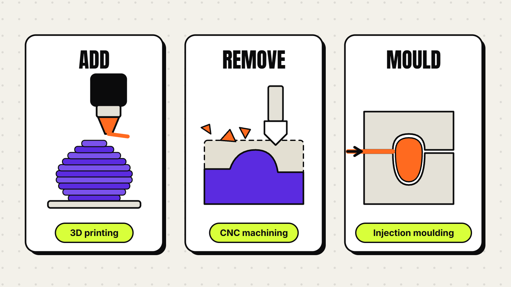
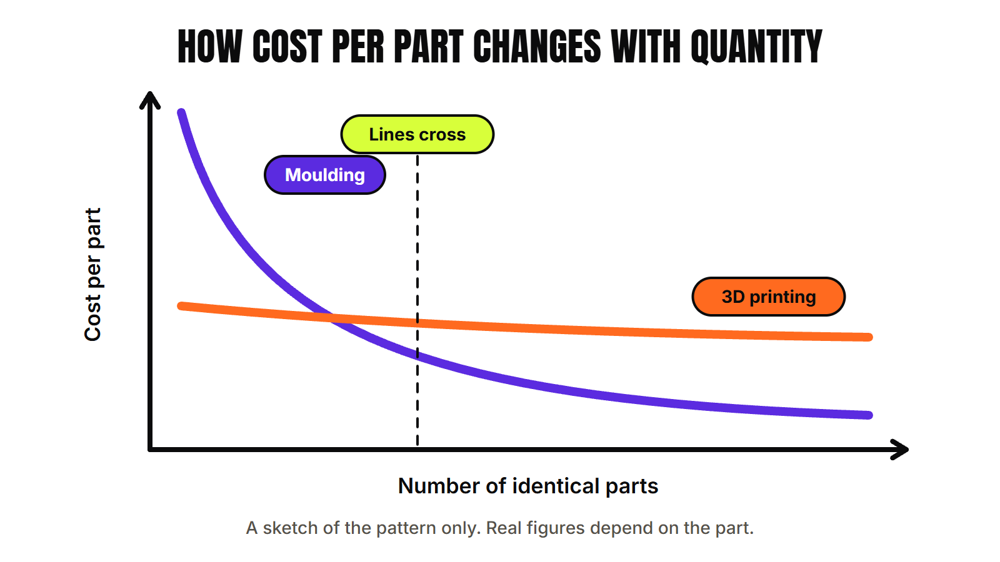

Before 3D printing became common, a plastic or metal part was usually made in one of two ways: shaped in a mould, or cut from a solid block. Both are still the right answer for many jobs. 3D printing is a third option with its own strengths and limits. Choosing well can save money and weeks of waiting, so this guide compares the three in terms a buyer can use.
The part is built up layer by layer from a digital file. There is no mould and no custom tool. If the design changes, you change the file and print again.
A computer-controlled cutter carves the part out of a solid block of metal, plastic, or wood. Everything that is not the part becomes chips. Machining holds tight dimensions and produces parts with the full strength of the solid stock.
Molten plastic is pushed into a metal mould, cooled, and ejected. The mould is expensive and takes time to make, but once it exists, each part comes out quickly and nearly identical. Most mass-produced plastic items around you were made this way.

Every process has two kinds of cost. One is paid once, before the first part: design checks, tooling, and setup. The other is paid for every part: material, machine time, and handling.
This is why a single custom piece is usually far cheaper to print, while tens of thousands of identical pieces are usually cheaper to mould. Somewhere between them the lines cross. Where they cross depends on the size, material, finish, and complexity of your part, so treat any single "break-even number" with care.

| What you care about | 3D printing | CNC machining | Injection moulding |
|---|---|---|---|
| First part | Quick, little setup | Needs programming and setup | Slow, mould comes first |
| Best quantity | One to small batches | Small to medium batches | Large runs |
| Changing the design | Edit the file | Edit the program | Rework or remake the mould |
| Complex inner shapes | Very capable | Limited by tool reach | Limited by mould release |
| Surface finish | Layer lines on filament parts, smooth on resin | Smooth, tool marks possible | Very smooth and consistent |
| Strength | Depends on orientation and bonding | Close to the solid material | Consistent, close to the material rating |
| Metals | Needs specialised machines | Common | Plastics mainly, metals through other moulding methods |
Two other options deserve a mention. Hand crafting in wood, clay, or metal gives each piece a character a machine does not, and it suits art and heritage work. Buying a standard off-the-shelf item is almost always the cheapest answer when one already fits. 3D printing earns its place in the gap between them: you need something specific, in a small number, and no shop sells it in the right size.
These processes often work as a sequence. A team prints early versions to check shape and fit, machines a few samples to test strength in the final material, and moves to moulding once the design stops changing and demand is proven. Printing the early rounds means mistakes are found while they are still cheap to fix.
Tip: If you plan to mould a part later, say so when you order the prototype. Wall thickness and draft angles that suit moulding can be built in from the start.
If most of your answers point to small numbers, changing designs, or unusual shapes, printing is worth quoting. Send your file and quantity through the quote form, or read about business and bulk orders. To see how printing differs from the paper kind, start with 3D printing vs normal printing.